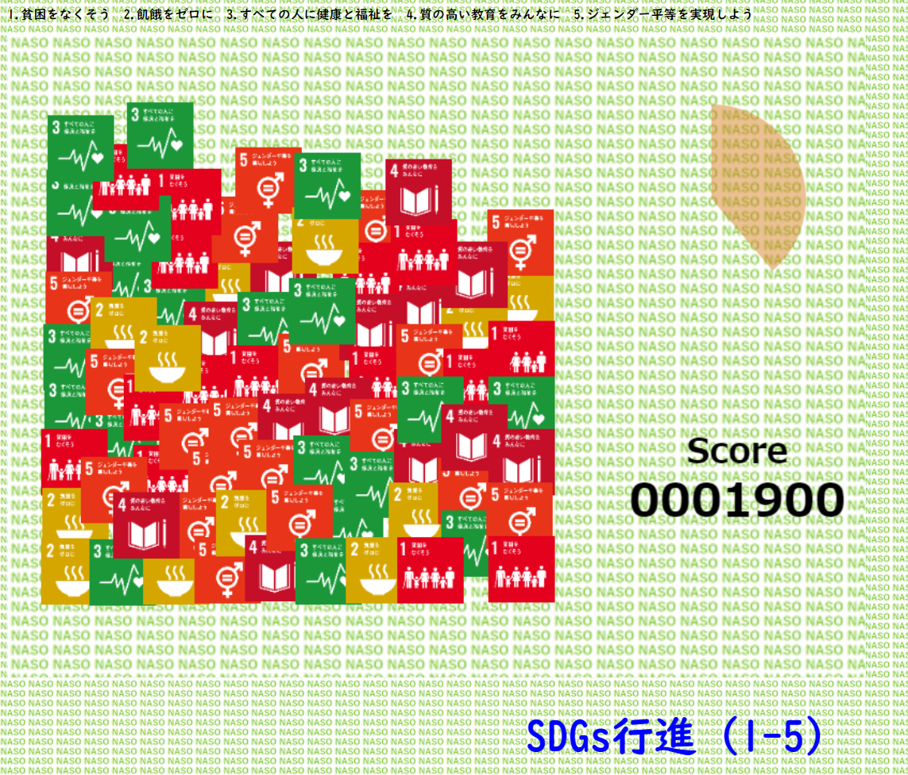

|
SDGsロゴカードにによる神経衰弱です。 左上にあるスタートボタンをクリックして始めて下さい。 左下には経過時間を示しています。 |
|  |
近くにある同じロゴをクリック（タップ）してラインでつないで消して下さい。 消した分のロゴは上から落ちてきます。 （制限時間約1分間） |
|
同じロゴが縦方向、又は横方向に３つ以上並ぶよう、ブロックをタップ＆ドラッグして上下/左右に入れ替えてください。 ブロックが消えると上のブロックが落ちてきます。 短時間に連続して消すとスコアが加算されます。 （70秒でゲーム終了） |
|
スライドパズル（３×３）です。開始のボタンをクリックして始めて下さい。
空白に隣接しているタイルをスライドさせて右図のようになれば完成です。 経過時間と操作回数が見れるようになっています。 |
|